Веб-приложение для планирования задач отдела, контроля сроков, недельной отчётности и расчёта показателей эффективности сотрудников — с ролями, графиком отсутствий и базой данных.
Как читать. Главы 02–12 — пошаговое руководство по экранам. Глава 03 объясняет, чем отличается работа руководителя и исполнителя. Глава 16 описывает раздел «Администрирование», глава 17 — изменения по сравнению с предыдущей документированной версией 4.0.2. Скриншоты сняты с демонстрационными данными на четверг, 17 сентября 2026 года, в двух темах: в этом PDF — светлая, в разделе «Информация» — та, что сейчас включена в приложении.
«Контроль задач» собирает в одном окне календарь отдела, недельный план мероприятий, контроль сроков, отчёт об исполнении и рейтинг сотрудников. Каждая задача заводится один раз и сразу видна во всех разделах. Руководитель планирует и оценивает, исполнитель ведёт исполнение своих задач.
| Учётная запись | Сотрудник | Роль |
|---|---|---|
| user@example.com | Иванов А.Б., начальник отдела | администратор |
| petrov@example.com | Петров В.С., заместитель | руководитель |
| sidorov@example.com | Сидоров Д.Е., ведущий специалист | исполнитель |
| smirnova@example.com | Смирнова О.Л., документовед | исполнитель |
Пароль у всех демонстрационных учётных записей — 123456. Остальные сотрудники отдела (40 человек в демоданных) входят через Windows. Если администратор включил вход через Windows, форма не показывается: приложение само узнаёт доменную учётную запись сотрудника (глава 16).
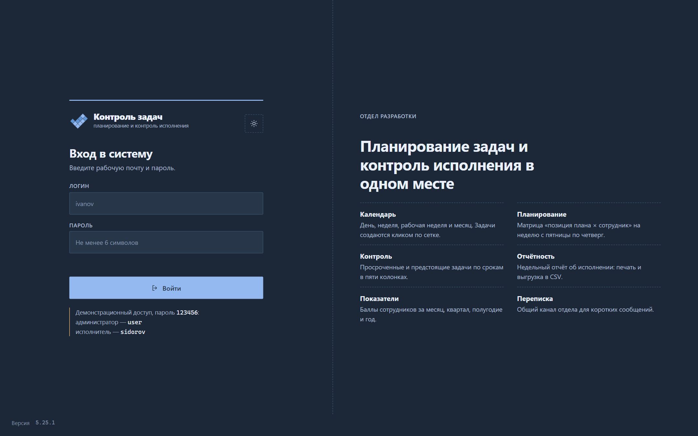
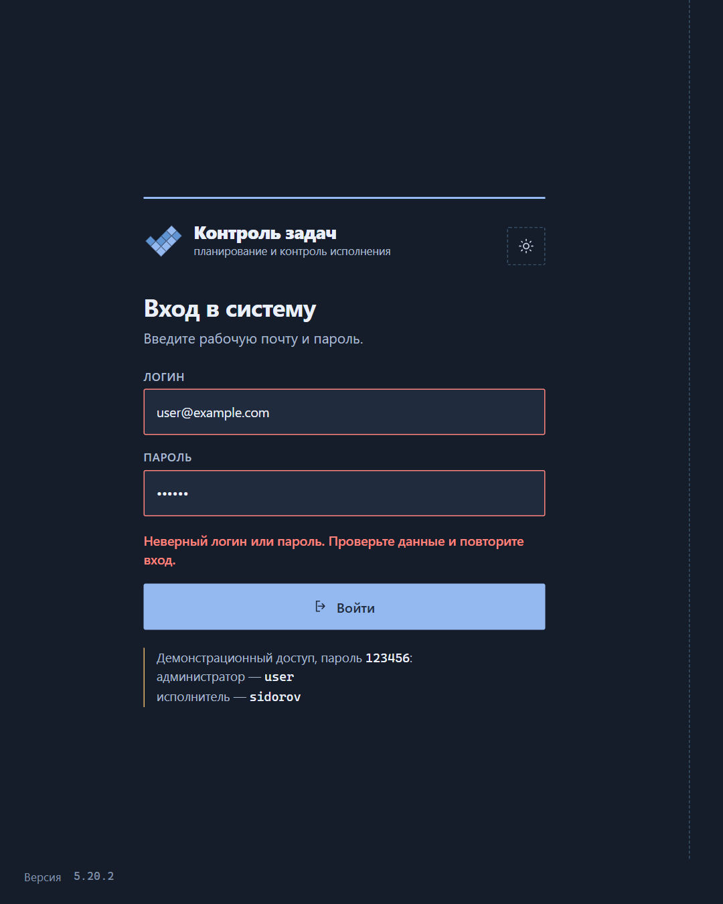
В шапке слева — название, имя вошедшего сотрудника и его роль, справа — служебные кнопки, ниже — разделы. Шапка закреплена: при прокрутке страницы она остаётся наверху, разделы и счётчик просрочки всегда под рукой. Так же закреплена панель структуры подразделения в разделе «Сотрудники». Внизу каждой страницы указаны версия приложения и состояние связи с базой: «сохранено в базе · 13:20», «сохранение…» или «нет связи с базой». Если сохранить изменение не удалось, над страницей появляется причина и кнопка «Повторить».
| Элемент | Назначение |
|---|---|
| Разделы | Календарь, Планирование, Контроль, Тетрис, Отчётность, Показатели, Сотрудники, Переписка, Информация. У исполнителя вместо «Сотрудников» — «Моя карточка», «Отчётности» и «Показателей» нет. Красная цифра у «Контроля» — число просроченных задач, синий кружок у «Переписки» — непрочитанные сообщения коллег (глава 11). |
| Логотип | Галочка из квадратных блоков — «задача выполнена» и блоки «Тетриса». Нажатие ведёт на главную страницу (Календарь). При наведении курсора на знак кубики по очереди подпрыгивают «по ступеням» снизу слева вверх вправо и возвращаются на место; при включённом в системе «уменьшении движения» знак лишь мягко мигает. |
| Колокольчик | Число просроченных задач (у исполнителя — только его). По нажатию открывается «Контроль исполнения». |
| Шестерёнка | Только у администратора: раздел «Администрирование» — пользователи, подразделения, роли, способ входа, словари, разделы планирования, шаблоны документов. |
| Солнце / луна | Переключение светлой и тёмной темы. |
| Круговая стрелка | Только у руководителя: восстанавливает демонстрационные данные. Нажмите дважды — первое нажатие только предупреждает. |
| Квадрат с инициалами | Ваша карточка сотрудника. |
| Дверь со стрелкой | Выход из системы. Данные при выходе сохраняются. |
Заголовок экрана компактный: название и короткое пояснение в одну строку, действия — справа. Под ним — строка фильтров: подпись и значение каждого фильтра стоят в одну строку. Значение фильтра — жирный текст со стрелкой ▾; нажмите на него, чтобы выбрать другое. Список закрывается клавишей Esc или кликом мимо, стрелки ↑ ↓ и Enter тоже работают.
Подсказки. Наведите курсор на кнопку, метку срока, полосу отсутствия или процент в «Тетрисе» — через мгновение появится подсказка в стиле приложения. С клавиатуры подсказка появляется при переходе клавишей Tab.
Раздел «Информация» — последний в меню: это руководство внутри приложения, с оглавлением слева и кнопкой «Скачать PDF». Нажмите на рисунок — он откроется крупно в окне; клик по рисунку переключает «по размеру окна» и натуральную величину, стрелки ← → листают рисунки. Там же ссылка на библиотеку компонентов.
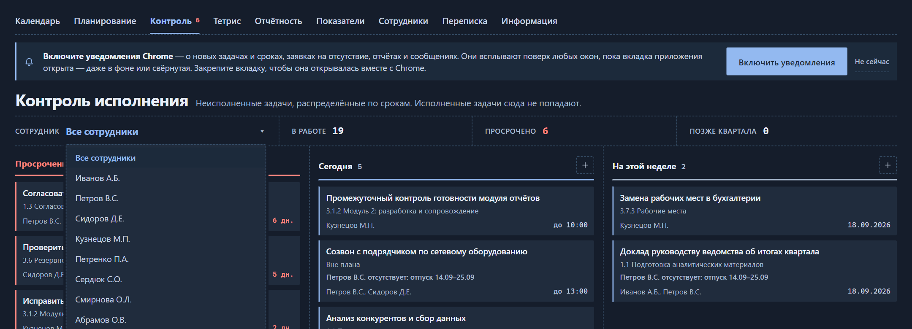
Приложение сообщает о событиях всплывающими уведомлениями Chrome поверх любых окон — какая бы вкладка ни была активна и даже когда Chrome свёрнут. Нужно одно: вкладка приложения открыта (можно в фоне). Закрепите её — правой кнопкой по вкладке → «Закрепить», и она будет открываться вместе с Chrome. Нажатие на уведомление открывает нужный раздел. Интернет не нужен: всё работает внутри корпоративной сети.
| Событие | Кому приходит |
|---|---|
| Новая задача, назначение, перенос срока | Исполнителям задачи (кроме того, кто её изменил). |
| Задача исполнена | Руководителям. |
| Просроченные задачи | Каждому исполнителю — раз в день, после 9:00 по Москве при первом обращении его вкладки к серверу: список его просроченных задач. |
| Заявка на отсутствие | Тем, кто согласует отсутствия; решение по заявке — её автору. |
| Отчёт за неделю направлен | Руководителям; каждому исполнителю — начисленные ему баллы. |
| Сообщение в «Переписке» | Всем сотрудникам, кроме автора. |
Вкладка спрашивает сервер о новых уведомлениях каждые 20 секунд. Если вкладку закрывали, при следующем открытии покажутся последние три пропущенных уведомления и строка «И ещё уведомлений: N».
Уведомление не всплывает? Chrome показывает уведомления через Windows. Проверьте: «Параметры Windows» → «Система» → «Уведомления» — уведомления включены, у Google Chrome переключатель включён, режим «Не беспокоить» выключен. Другой способ — пусть Chrome рисует уведомления сам: откройте chrome://flags/#enable-system-notifications, выберите «Disabled» и перезапустите Chrome. Уведомления Chrome работают только на защищённом адресе (https://) — так требует браузер.
Интерфейс и права зависят от типа учётной записи. Ограничения проверяются не только скрытием кнопок: приложение не сохранит изменение, на которое у пользователя нет права.
Администратор может всё, что руководитель, и дополнительно открывает раздел «Администрирование». Набор разрешений каждой роли настраивается (глава 16); в таблице — разрешения по умолчанию.
| Действие | Руководитель | Исполнитель |
|---|---|---|
| Видеть задачи отдела в Календаре | да | да, по умолчанию — только свои |
| Создавать задачи | любому сотруднику | только себе |
| Менять название, сроки, позицию, категорию, исполнителей | да | нет |
| Указывать документ, результат, отмечать исполнение | в любой задаче | в своих задачах |
| Баллы за исполнение в окне задачи | видит и меняет | не видит; свои баллы — в «Моей карточке» |
| Удалять задачи | да | нет |
| Планирование | все сотрудники, фильтры по группе и сотруднику, отправка отчёта | только свой столбец |
| Контроль исполнения | все, фильтр по сотруднику | только свои задачи |
| Отчётность, Показатели | да | раздел скрыт, прямая ссылка ведёт в Календарь |
| Карточки сотрудников | все | только своя («Моя карточка») |
| Тетрис: график отдела | да, с остатками всех | да, остатки — только свои |
| Тетрис: отсутствия создавать и менять | любому сотруднику, сразу согласовано | заявка только на себя; менять и отзывать — до решения |
| Согласовать или отклонить заявку | да | нет |
| Нормы отпуска и отгулов | меняет | видит свои |
| Восстановить демоданные | только администратор | нет |
| Администрирование | только администратор | нет |
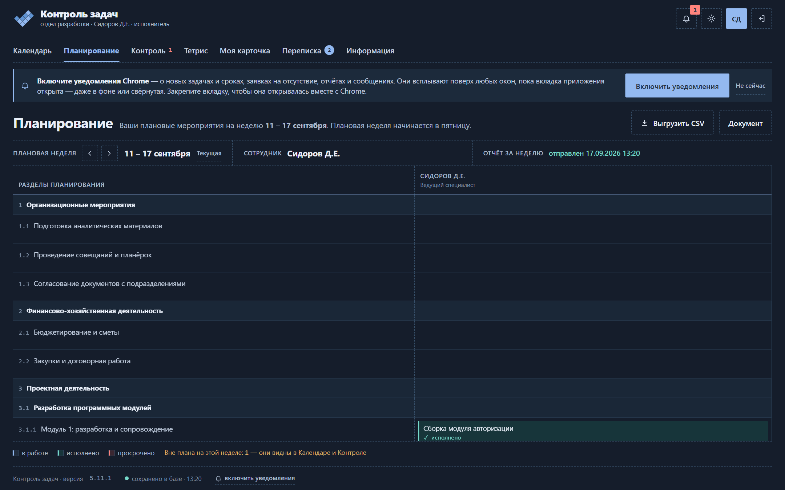
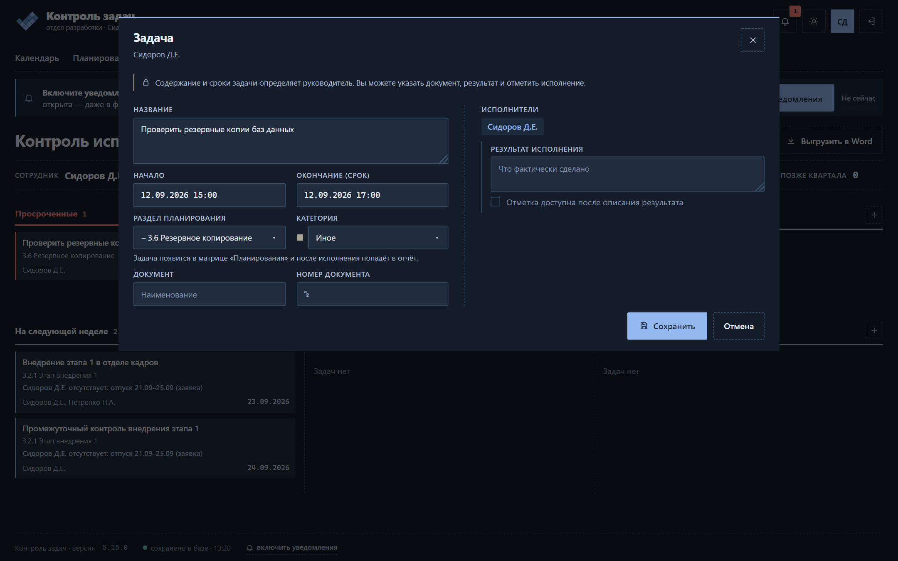
Открыв чужую задачу, исполнитель видит её только для просмотра — вместо «Сохранить» кнопка «Закрыть».
Задача создаётся и редактируется в одном и том же окне, откуда бы его ни открыли. Изменения сразу видны во всех разделах.
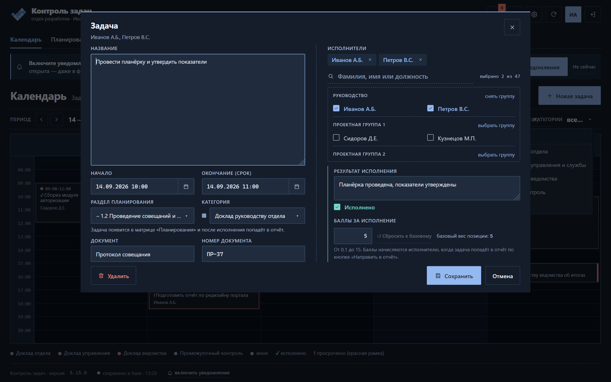
| Поле | Что указать |
|---|---|
| Название | Что нужно сделать. Обязательное поле. Поле многострочное и занимает всю свободную высоту левой колонки — удобно вставлять длинные формулировки из плана. |
| Начало, окончание | Дата и время. Окончание — срок исполнения. При переносе начала окончание сдвигается, длительность сохраняется, поэтому начало не может оказаться позже окончания. Если вручную поставить окончание раньше начала, под полем сразу появится сообщение, и сохранить задачу не удастся. Введите дату с клавиатуры («17.09.2026 10:00») или нажмите на значок календаря: слева месяц (неделя с понедельника, сегодня обведено), справа время с шагом 15 минут. |
| Раздел планирования | Позиция недельного плана. С ней задача попадает в матрицу «Планирования» и в отчёт. «Вне плана» — только Календарь, Контроль и карточки. |
| Категория | Доклад руководству отдела, доклад руководству управления и службы, доклад руководству ведомства, промежуточный контроль или «Иное». Определяет цвет в Календаре; цветной квадрат рядом с полем показывает выбранный цвет. Цвета категорий меняет администратор (глава 16). |
| Исполнители | Один или несколько сотрудников. Каждый исполнитель получает за задачу полные баллы. Выбранные видны сверху, у каждого есть крестик «Убрать». Ниже — список отдела по подразделениям с кнопкой «выбрать группу»; если сотрудников больше восьми, появляется поиск по фамилии, имени или должности. Список прокручивается внутри окна, поэтому окно не растёт даже при большом отделе. Если сотрудник отсутствует в день срока, рядом с его фамилией стоит пометка, например «отпуск». |
| Документ, номер | Основание или результат: приказ, протокол, ТЗ. Выводятся в отчёте и в документах по шаблону. Поля стоят внизу левой колонки, над кнопкой «Удалить». |
| Результат исполнения | Что фактически сделано. Отметка «Исполнено» доступна только после заполнения результата. |
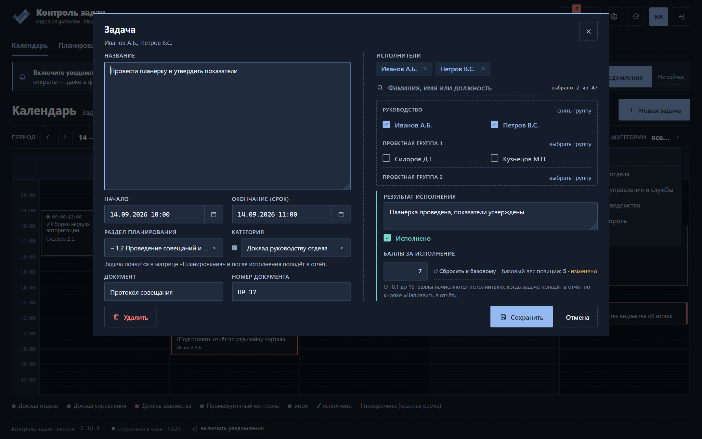
Под отметкой об исполнении у руководителя находится поле «Баллы за исполнение». Исполнитель этого поля не видит — свои баллы он смотрит в «Моей карточке».
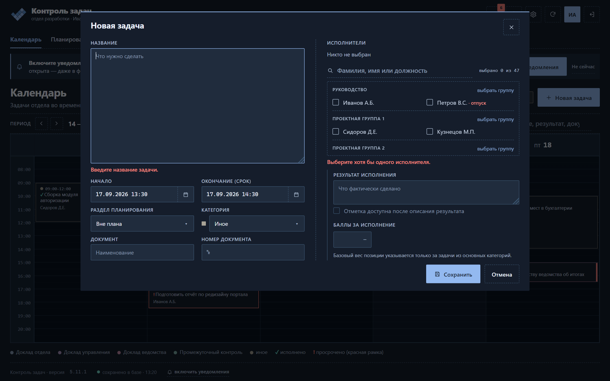
Задачи отдела во времени. По умолчанию открывается рабочая неделя; у исполнителя фильтр «Исполнитель» сразу стоит на нём самом.
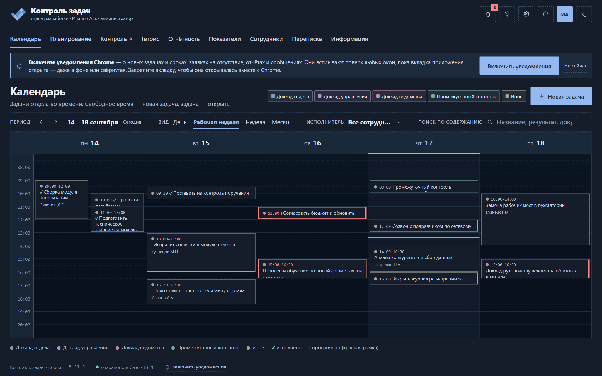
Цвет рамки и точки — категория. Под названием указан исполнитель: в низком мероприятии он стоит в одной строке с названием, и при нескольких исполнителях показан первый и «+N» — полный список есть в подсказке. Состояние видно по полосе у правого края:
| Полоса | Что означает |
|---|---|
| Зелёная | Мероприятие исполнено. Рядом с названием стоит ✓. |
| Красная | Просрочено — срок прошёл, а отметки об исполнении нет; такое мероприятие вдобавок обведено красным, а время написано красным. Красной полосой отмечается и мероприятие, у которого исполнитель отсутствует в день срока — в отпуске, командировке или на больничном. |
| Нет полосы | Мероприятие в работе, срок не прошёл. |
Исполнено и просрочено исключают друг друга, поэтому полоса всегда одна. Подсказка при наведении называет время, название, категорию, исполнителей и состояние. То же оформление — в виде «Месяц».
Введите слова в поле «Поиск по содержанию». Поиск идёт по названию, результату исполнения, документу и его номеру, разделу планирования, категории и ФИО исполнителей. Регистр и буквы «ё/е» не различаются, найдутся задачи, где есть все введённые слова.
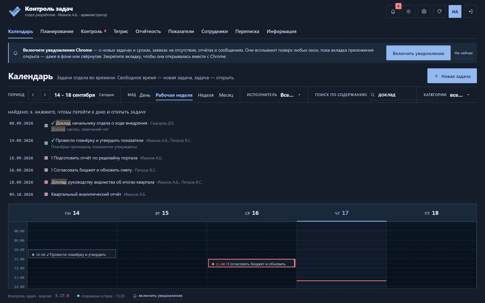
| Категория | Когда использовать | |
|---|---|---|
| Доклад руководству отдела | Доклады начальнику отдела и заместителю. | |
| Доклад руководству управления и службы | Доклады вышестоящему управлению и службе. | |
| Доклад руководству ведомства | Доклады руководству ведомства. | |
| Промежуточный контроль | Контрольные точки по ходу исполнения. | |
| Иное | Обычные задачи, в том числе вне плана. |
Список «Категории» стоит в строке фильтров, после поиска по содержанию: снимите отметку — события этой категории скроются, строка «все категории» возвращает остальные. Цвета в таблице — по умолчанию; администратор меняет их в «Словарях».
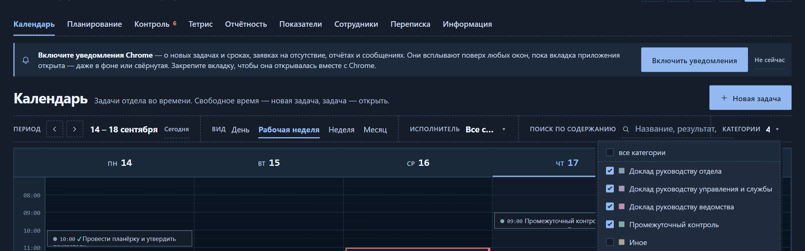
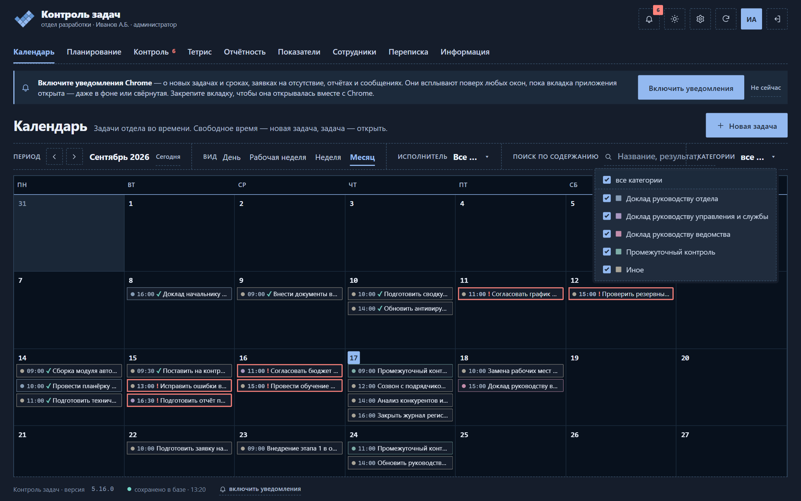
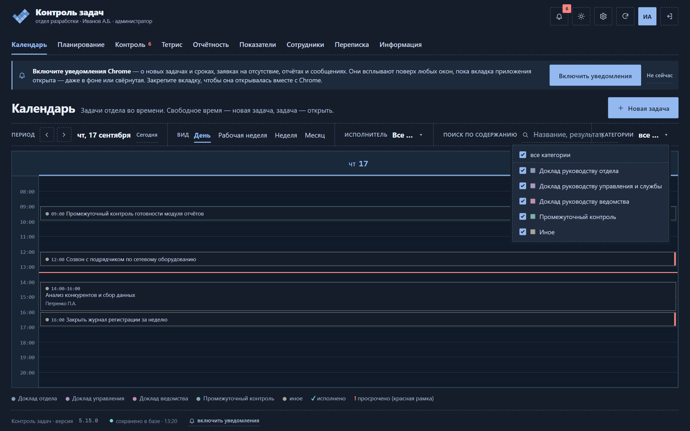
Недельный план отдела в виде матрицы: строки — разделы планирования, столбцы — сотрудники. Неделя идёт с пятницы по четверг; в неё попадают задачи со сроком в этом интервале.
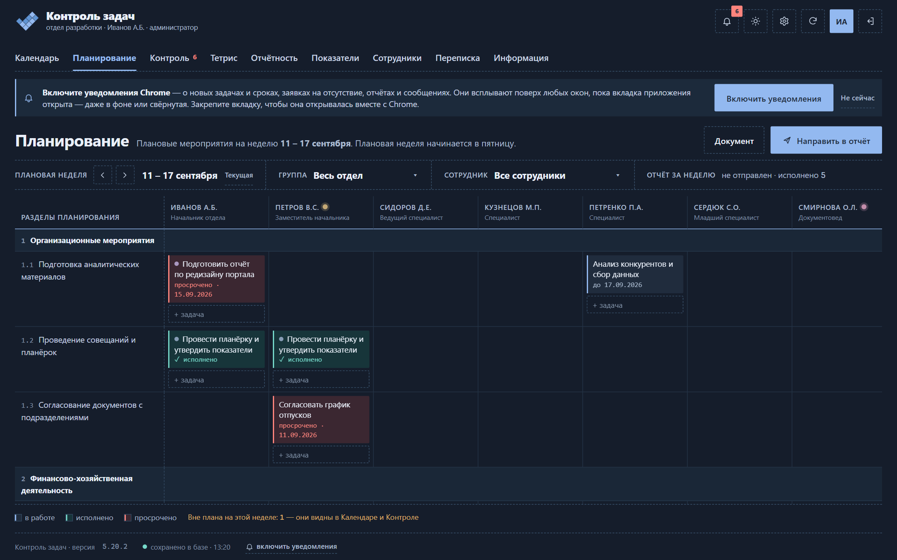
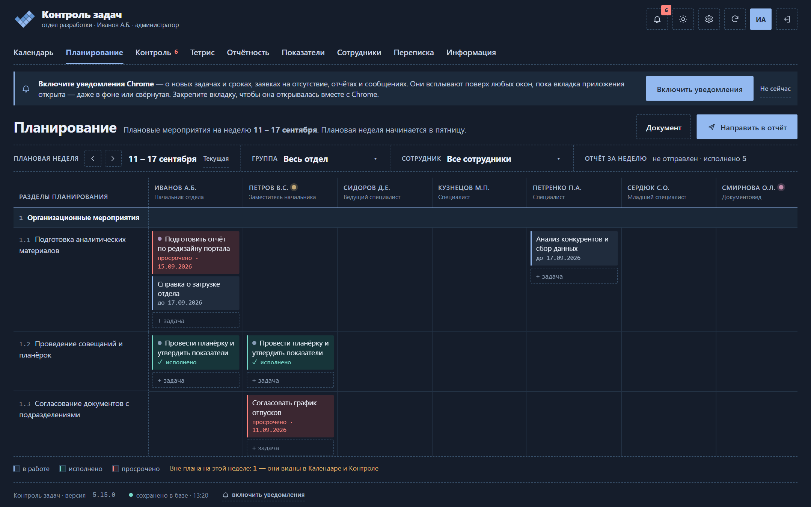
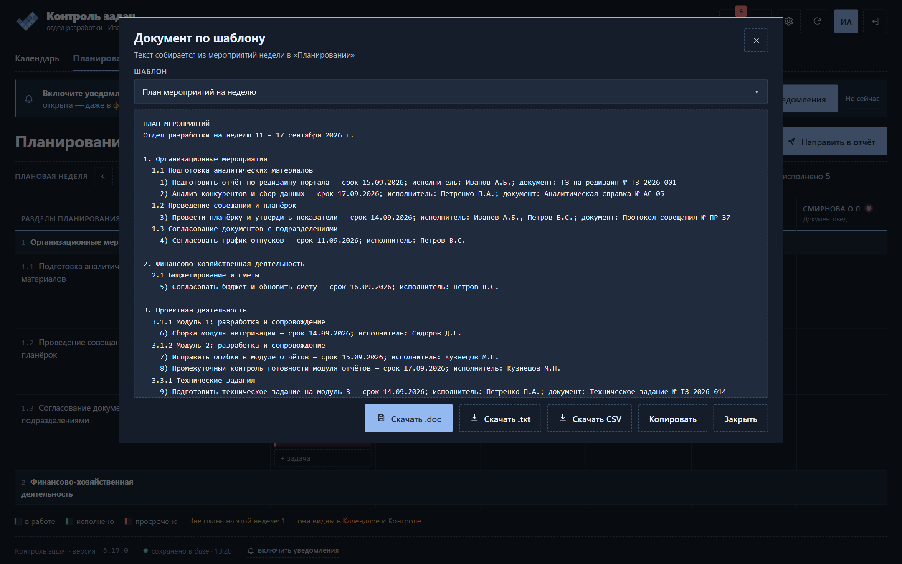
Нажмите «Направить в отчёт». В отчёт попадут исполненные задачи недели с разделом планирования, каждая — со своими баллами за исполнение на момент отправки. Именно в этот момент баллы начисляются сотрудникам и появляются в «Показателях» и карточках. Повторная отправка («Обновить отчёт») заменяет отчёт недели, а не дублирует его.
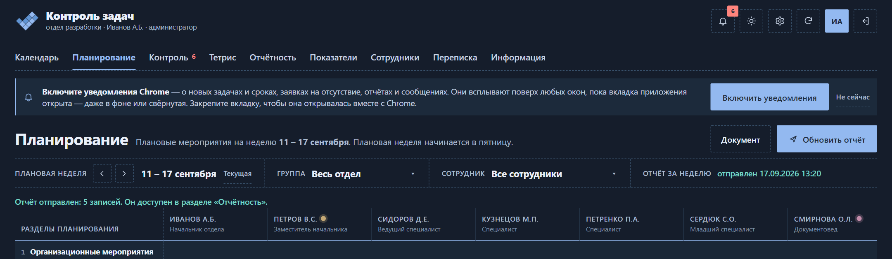
Доска задач по срокам. У руководителя — все сотрудники с фильтром, у исполнителя — только его задачи.
В строке фильтров четыре выпадающих списка: «Сотрудник», «Категории» (с отметками, по умолчанию все), «Сроки» — какие колонки показывать (по умолчанию все) — и «Исполнение». По умолчанию доска показывает задачи в работе. Отметьте «Исполненные» — они добавятся бледными, полупрозрачными и с галочкой перед названием. Кнопка «Выгрузить в Word» в заголовке сохраняет то, что сейчас на доске: раздел на каждую колонку и таблицу с задачей, разделом планирования, исполнителями, сроком и состоянием.
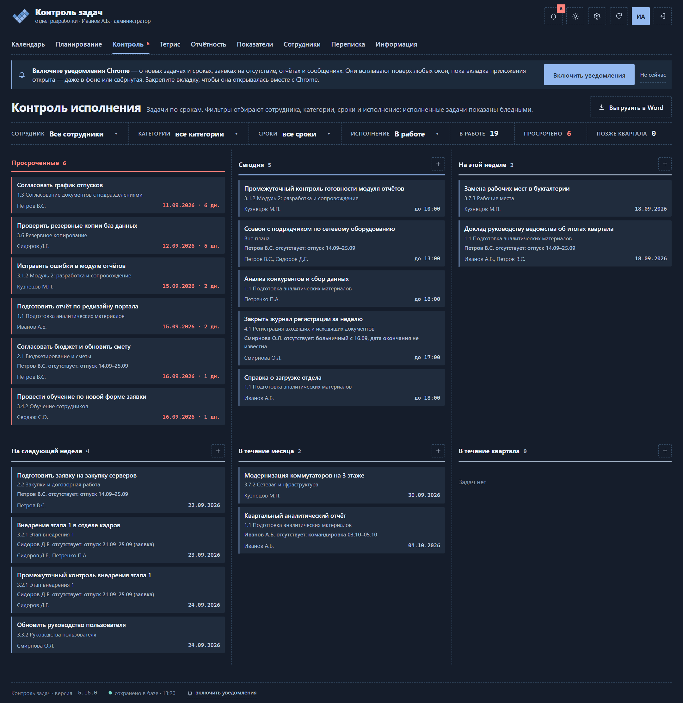
| Колонка | Какие задачи | Срок новой задачи по «+» |
|---|---|---|
| Просроченные | Срок раньше сегодняшнего дня; справа — сколько дней прошло. | — (кнопки нет) |
| Сегодня | Срок сегодня; указано время окончания. | сегодня, 18:00 |
| На этой неделе | С завтрашнего дня до воскресенья. | пятница, 18:00; с пятницы — следующий день |
| На следующей неделе | Понедельник — воскресенье следующей недели. | пятница следующей недели |
| В течение месяца | До конца месяца, но не менее 30 дней вперёд. | пятница через две недели |
| В течение квартала | До конца квартала, но не менее трёх месяцев вперёд. | пятница через семь недель |
На широком экране колонки стоят по три в ряд, на узком — одна под другой. Задачи со сроком дальше квартала на доску не попадают — их число показано в сводке «Позже квартала».
Нажмите на карточку, опишите результат, отметьте исполнение и сохраните — карточка станет бледной, а если в фильтре отмечено только «В работе», исчезнет с доски; счётчик просрочки в шапке уменьшится.
Исполнитель отсутствует. Если срок задачи приходится на отпуск, командировку, отгул, больничный или учёбу исполнителя, на карточке красным написано, кто и когда отсутствует. Такую задачу стоит перенести или передать другому сотруднику.
Раздел «Тетрис» — график событий отдела на месяц: строки — сотрудники, столбцы — дни, полосы — отпуска, командировки, отгулы, больничные и учёба. На той же строке круглыми метками отмечены сроки задач сотрудника, поэтому пересечения видны сразу.
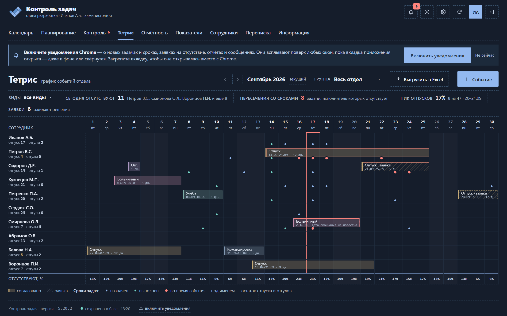
| Элемент | Что показывает |
|---|---|
| Полоса | Отсутствие. Цвет — вид: отпуск, командировка, отгул, больничный, учёба. Сплошная заливка — согласовано, диагональная штриховка — заявка, точечный правый край — больничный без даты окончания. Цвета видов задаёт администратор в «Словарях». |
| Метка срока | Срок задачи сотрудника: синяя — назначен, зелёная — исполнено, красная — срок приходится на отсутствие. Нажмите на метку, чтобы открыть задачу. |
| Под именем | Остаток отпуска и отгулов на текущий год (исполнитель видит только свой). Остаток отпуска 5 дней и меньше выделен. |
| Сводка | Кто отсутствует сегодня (первые трое и «ещё N», полный список — в подсказке), сколько пересечений со сроками, пик отпусков в месяце, сколько заявок ждут решения. |
| Строка «Отсутствуют, %» | Внизу графика: доля сотрудников (отдела или группы) в согласованном отсутствии любого вида по каждому дню. «—» — все на месте; выше 30% ячейка красная. В подсказке — кто отсутствует. |
Термины. В «Тетрисе» запись об отпуске, командировке, отгуле, больничном или учёбе называется событием: кнопка «Событие», окно «Новое событие», «Заявка на событие», список «Виды». В остальных разделах (карточка сотрудника, точки у фамилий) — по-прежнему «отсутствие».
Большой отдел. Строки сотрудников компактные — 40 пикселей. В демоданных в отделе разработки 47 человек: руководство, две проектные группы, группа документооборота и четыре отделения — разработки, сопровождения, аналитики и тестирования. Фильтр «Группа» оставляет на графике одно подразделение; подразделения и состав берутся из «Администрирования».
Кнопка «Выгрузить в Excel» в строке заголовка сохраняет файл tetris-ГГГГ-ММ.xlsx — книгу из нескольких листов. Выгружается то, что показано на экране: фильтр «Виды» и выбранная группа учитываются. На каждом листе закреплена шапка, поэтому таблица листается без потери заголовков.
| Лист | Что на нём |
|---|---|
| График | Та же матрица месяца: строки — сотрудники, столбцы — дни, заливка ячейки — вид события. Цвета совпадают с цветами на графике, потому что берутся из тех же «Словарей»: насыщенный тон — согласовано, светлее — заявка. В ячейке сохраняются отметки сроков: • — срок назначен, ✓ — исполнено, ! — срок приходится на событие. Во второй колонке — остаток отпуска и отгулов (исполнитель видит только свой) либо должность. Внизу — строка «Отсутствуют, %» и легенда видов. Закреплены шапка и первые две колонки. |
| События | События месяца списком: сотрудник, вид, период, число дней, состояние и основание. Отклонённые не выгружаются. |
| Пересечения | Неисполненные задачи, срок которых приходится на событие исполнителя: задача, исполнитель, срок задачи, вид и период события, состояние — «Просрочено», «Под угрозой» или «По заявке». |
| Остатки | Остаток отпуска и отгулов по сотрудникам; остаток отпуска 5 дней и меньше выделен. Лист появляется, только если остатки доступны — исполнителю видны лишь свои. |
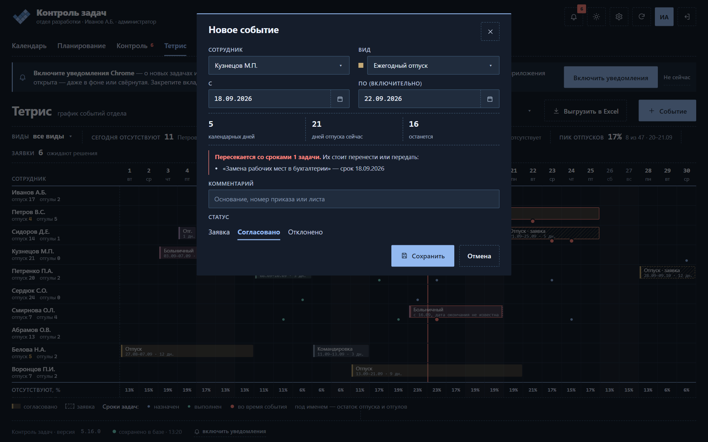
Под графиком — два списка. «Пересечения со сроками задач»: задача, исполнитель, срок и отсутствие, с отметкой «Просрочено» (срок уже прошёл), «Под угрозой» (срок впереди) или «По заявке» (отсутствие ещё не согласовано). Нажмите на название, чтобы перенести срок или передать задачу, или «Показать на графике». «Заявки на согласование» — руководитель согласует или отклоняет их одной кнопкой и видит, сколько задач заявка задевает.
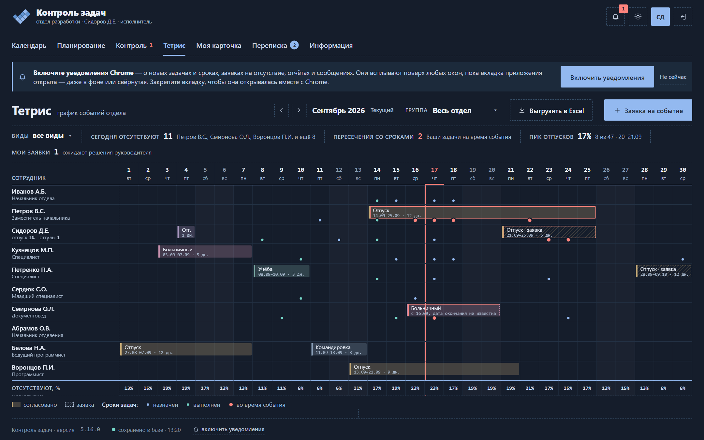
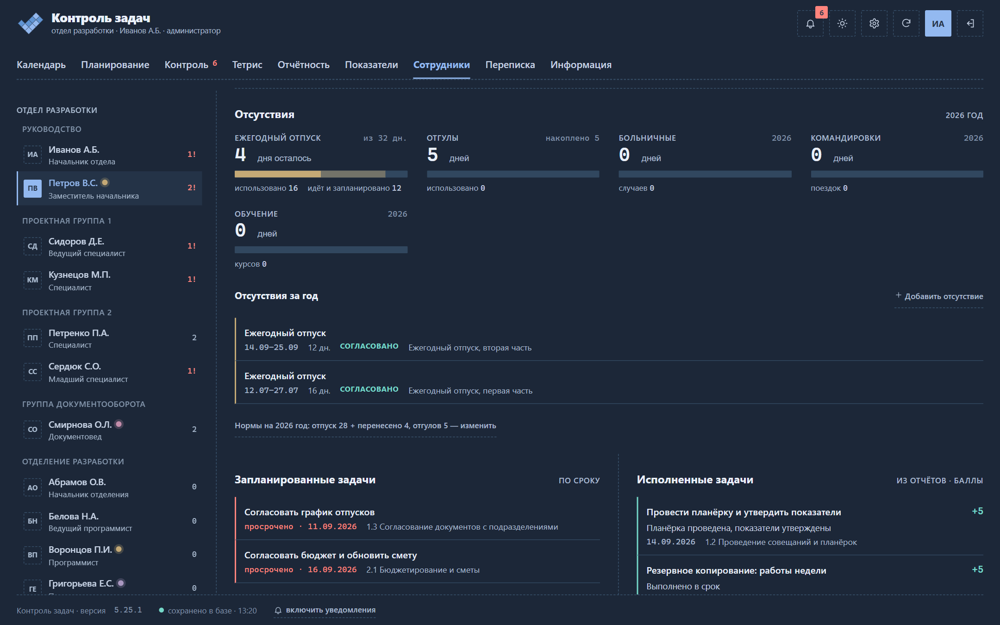
В карточке сотрудника блок «Отсутствия» показывает на текущий год: ежегодный отпуск (использовано, идёт и запланировано, в заявках, остаток), отгулы (накоплено, использовано, остаток), дни больничных, командировок и обучения, а также список отсутствий. Руководитель здесь же меняет нормы: право на отпуск, дни, перенесённые с прошлого года, и накопленные отгулы.
Отчёт об исполненных мероприятиях за неделю (раздел руководителя).
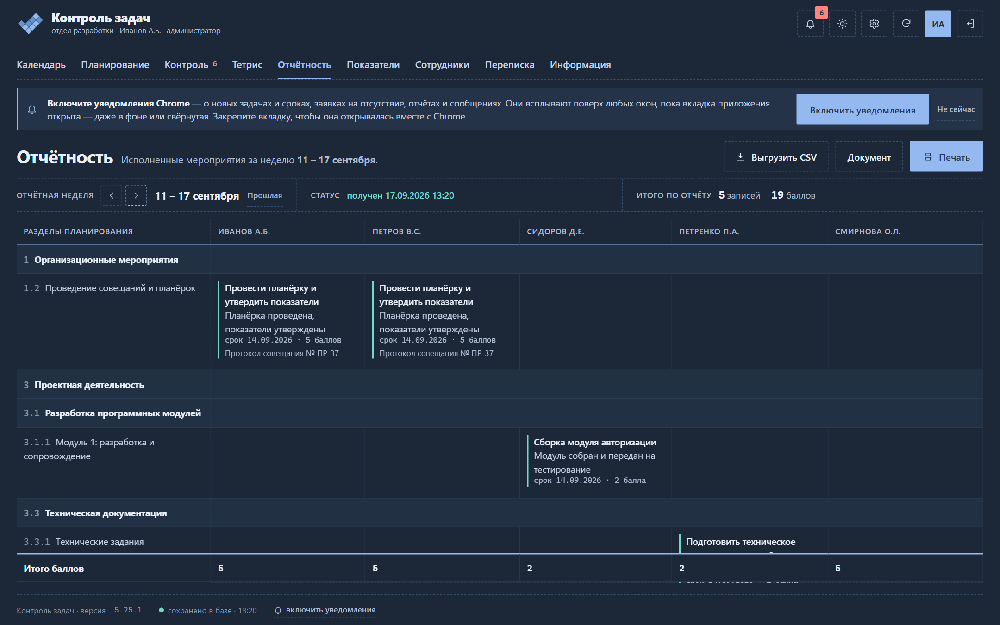
otchet-ГГГГ-ММ-ДД.csv для Excel (разделитель — точка с запятой, UTF-8).Кнопка «Документ» — такая же, как в «Планировании», но текст собирается из отправленного отчёта, поэтому в нём только исполненные мероприятия. По умолчанию — шаблон «Справка об исполнении»:
Кнопка доступна, когда за неделю получен отчёт с исполненными мероприятиями. Предлагаются только шаблоны «Отчётности». В окне есть и «Скачать CSV» — таблица отчёта для Excel.
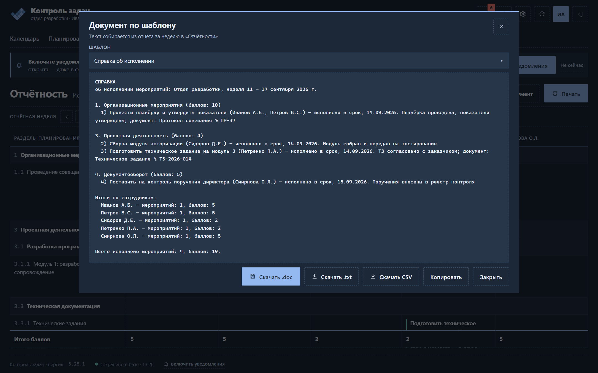
Рейтинг сотрудников по сумме баллов из полученных отчётов (раздел руководителя).
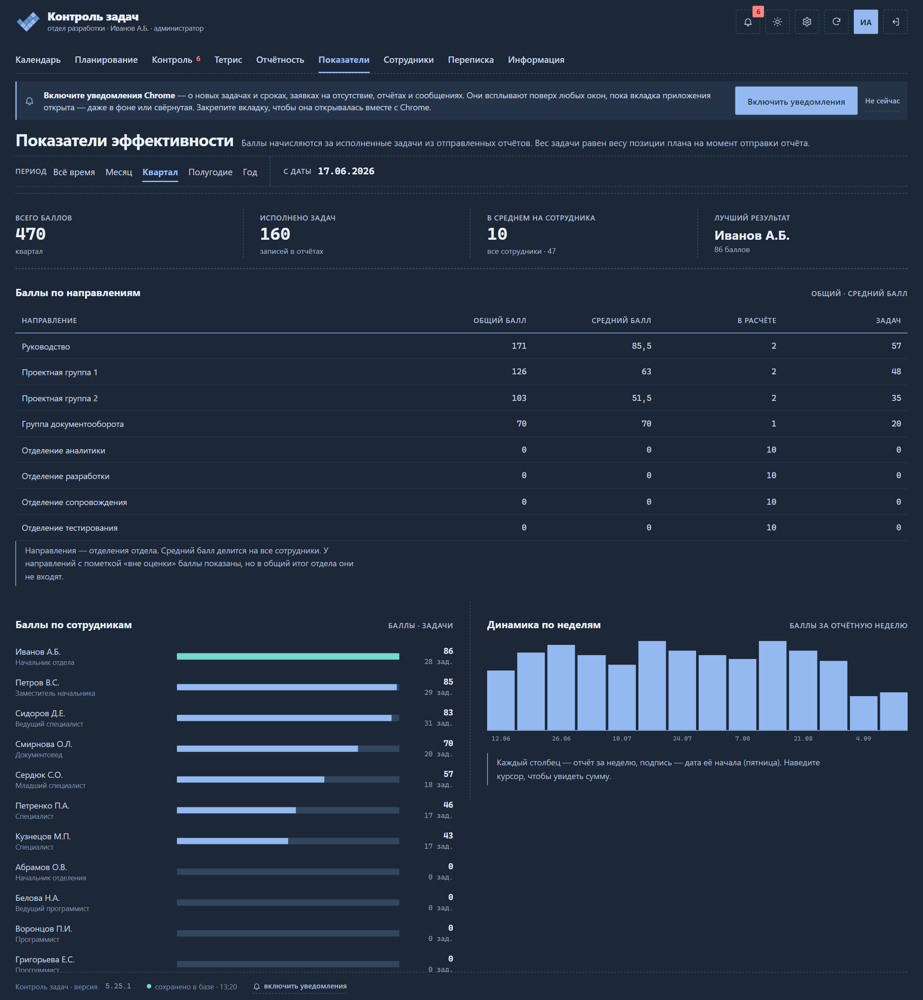
Что входит в общую оценку, задаёт администратор в разделе «Администрирование → Оценка». Оттуда берутся три вещи:
Правила применяются при показе. Изменение правила сразу пересчитывает и прошлые периоды — цифры в отчётах при этом не меняются, меняется только то, как они складываются.
У руководителя слева — структура отдела по подразделениям с числом задач в работе и просроченных. Точка у фамилии — сотрудник сегодня отсутствует: цвет — вид отсутствия, подробности — в подсказке; в заголовке карточки такая же метка стоит после ФИО и должности. У исполнителя раздел называется «Моя карточка» и показывает только его.
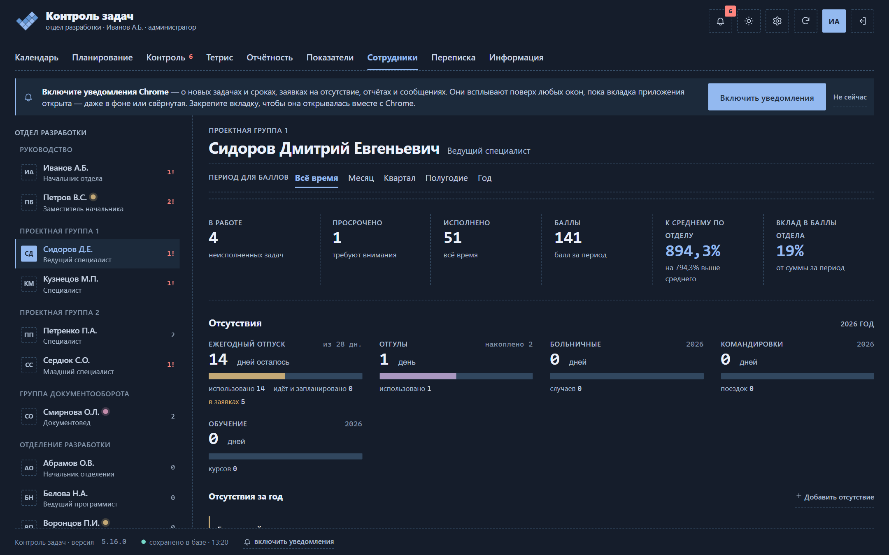
Общий канал отдела. Сообщения сгруппированы по дням, ваши подписаны «(Вы)». Enter — отправить, Shift+Enter — новая строка.
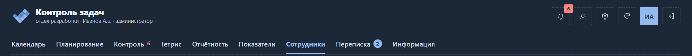
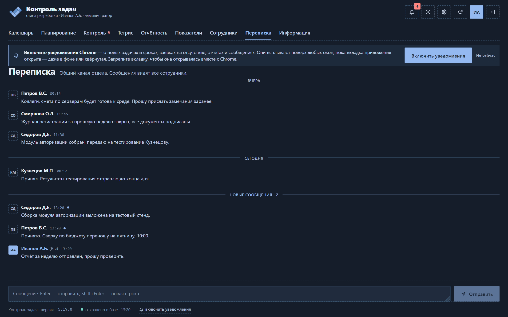
Сообщения хранятся в базе: их видят все сотрудники отдела. Отметка «прочитано» у каждого своя и одинакова на всех его компьютерах; пока сотрудник ни разу не открывал чат, новыми считаются все сообщения коллег.
Основная тема — тёмная: тёплый графит, светлые чернила, один акцентный цвет. Кнопка с солнцем в шапке включает светлую тему, с луной — возвращает тёмную. Выбор запоминается в браузере и действует и на экране входа. Скриншоты в разделе «Информация» переключаются вместе с темой: в светлой показаны светлые варианты.
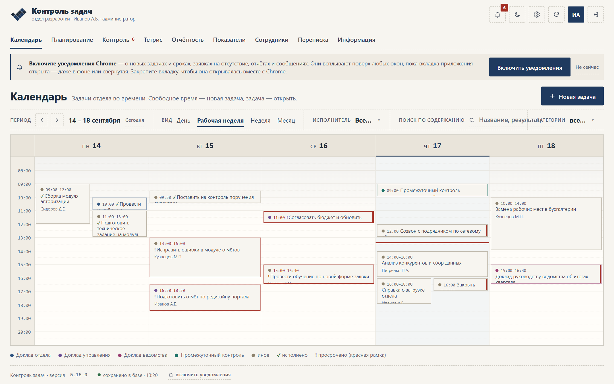
Все элементы интерфейса оформлены в единой теме «Графит · Полночь»; стандартные элементы браузера не выбиваются из системы. Календарь выбора даты и времени, подсказки, выпадающие списки, флажки, переключатели, поля ввода, окна и полосы прокрутки используют общую палитру. Витрина компонентов открывается из раздела «Информация» кнопкой «Библиотека компонентов» (адрес /kit).
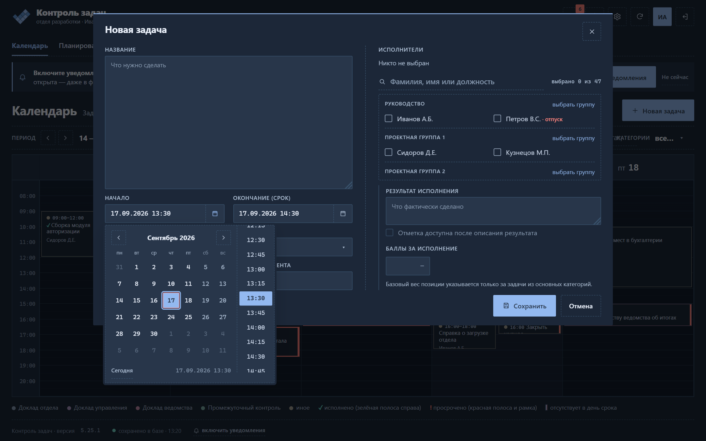
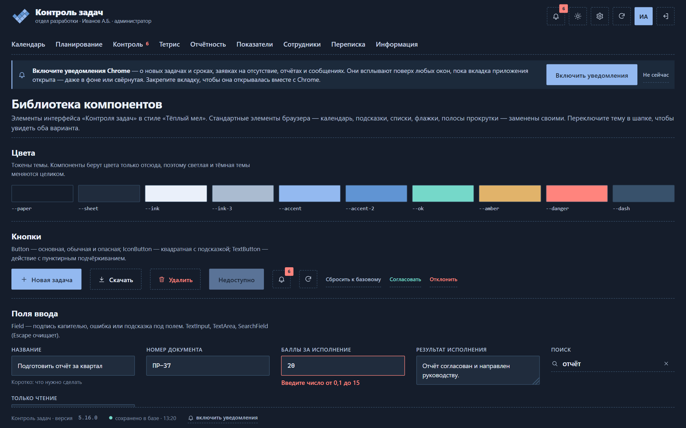
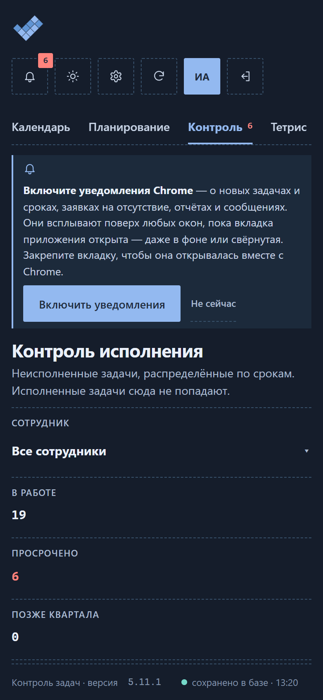
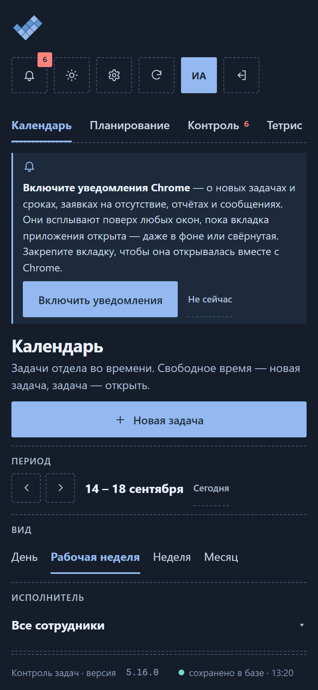
Проверены ширины 375, 768, 1024 и 1440 пикселей: страница не прокручивается по горизонтали, кнопки на телефоне не меньше 44 пикселей.
| Где | Границы недели |
|---|---|
| Календарь, Контроль | Понедельник — воскресенье. |
| Планирование, Отчётность | Пятница — четверг. Задача относится к неделе, если её срок (окончание) попадает в интервал. На четверг 17.09.2026 плановая неделя — 11–17 сентября, прошлая — 4–10 сентября. |
| Состояние | Как показано |
|---|---|
| В работе | Рамка и точка цвета категории, без знака. |
| Исполнено | Знак ✓ зелёным, событие приглушено. |
| Просрочено | Знак «!» и время красным, красная рамка. Просрочка определяется по дню. |
Отклонённые отсутствия в графике, остатках и пересечениях не учитываются. Остатки не хранятся, а каждый раз вычисляются из норм и отсутствий, поэтому они не расходятся с графиком.
| Ситуация | Сообщение |
|---|---|
| Пустое название | «Введите название задачи.» |
| Окончание раньше начала | «Окончание раньше начала: исправьте дату или время.» Сообщение появляется сразу при изменении даты, а не только при сохранении. |
| Нет исполнителей | «Выберите хотя бы одного исполнителя.» |
| Баллы вне диапазона | «Баллы — число от 0,1 до 15.» |
| Отметка без результата | Отметка недоступна: «Отметка доступна после описания результата». |
| Выбран раздел плана | Предупреждение: задача не попадёт в матрицу и отчёт. |
| Ограничение | Что это значит |
|---|---|
| Пароли демоучётных записей | Пароли демонстрационных учётных записей заданы в коде приложения; остальные сотрудники входят только через Windows. Для рабочей эксплуатации включите вход через Windows (глава 16). |
| Обновление у коллег | Изменения других пользователей подгружаются раз в минуту и при переключении на вкладку, а не мгновенно. |
| Документы по шаблону | Шаблон — простой текст с подстановками: в .doc весь текст получает один шрифт, таблиц и выделения нет. |
Нужен Node.js 20.19 или новее (проверено на 24.13).
Опубликованная версия: https://task-control-rho.vercel.app. В режиме разработки API работает внутри сервера Vite и хранит данные в файле .data/dev-db.json; если задана переменная DATABASE_URL (например, после vercel env pull), используется PostgreSQL.
| Часть | Как устроено |
|---|---|
| База | Microsoft SQL Server 2016 и новее (проверено на 2025) — основное хранилище для корпоративной сети: переменные MSSQL_SERVER, MSSQL_DATABASE, MSSQL_USER, MSSQL_PASSWORD. База и таблицы создаются сами при первом обращении, пустая база заполняется демоданными. Публикация на Vercel работает с Neon PostgreSQL (DATABASE_URL); без настроек базы данные лежат в файле рядом с сервером. |
| Таблицы | 14 таблиц с префиксом tc_: tc_tasks, tc_absences, tc_entitlements, tc_reports, tc_messages, tc_chat_reads, tc_users, tc_roles, tc_units, tc_dictionaries, tc_plan_rows, tc_templates, tc_meta. Изменения пишутся в транзакции под общей блокировкой; записываются только изменившиеся строки. |
| API | POST /api/login, GET /api/state, POST /api/action, GET /api/health (503, если база не отвечает). Изменения выполняет тот же код, что и в браузере (src/lib/reducer.ts), с пользователем из подписанного токена; входящие данные проверяются. |
| Сеанс | Токен HMAC-SHA256 на 7 дней. Секрет — AUTH_SECRET или, если не задан, вычисляется из настроек базы. |
| Уведомления | Без внешних служб и интернета. События определяет src/lib/notify.ts, сервер записывает уведомления в журнал tc_notices (хранится неделю). Открытая вкладка раз в 20 секунд запрашивает GET /api/notices?since=… и показывает новые уведомления средствами Chrome; таймер работает в отдельном потоке, поэтому в фоновой вкладке не замедляется. public/sw.js обрабатывает нажатие на уведомление. Напоминание о просрочке сервер создаёт сам при первом запросе сотрудника после 9:00 — планировщик не нужен. Требуется HTTPS. |
| Публикация | npm run build:vercel, затем vercel deploy --prebuilt --prod. Без DATABASE_URL API отвечает «База данных не подключена». |
| Публикация в IIS | Файл deploy-iis.bat — порядок ниже, в разделе «Публикация в IIS». |
В корпоративной сети приложение работает с локальным Microsoft SQL Server. База и таблицы создаются сами при первом запуске, поэтому разворачивать схему вручную не нужно.
Учётную запись и базу заводить вручную не нужно: их создаёт шаг 7 файла deploy-iis.bat — со случайным паролем, который сразу попадает в web.config вместе с ключом AUTH_SECRET. Таблицы приложение создаёт само при первом открытии.
sysadmin (или securityadmin и dbcreator).deploy-iis.bat имя сервера SQLSERVER (именованный экземпляр пишется как СЕРВЕР\ЭКЗЕМПЛЯР), при необходимости имя базы SQLDB и имя учётной записи SQLLOGIN. Запустить публикацию./api/health: ответ storage: sqlserver означает, что приложение работает с SQL Server и база отвечает. Ответ file — настройки не подхватились и данные пишутся в файл рядом с сервером. Код 503 и «База данных недоступна» — настройки заданы, но подключиться не удалось; подробная причина пишется в журнал iisnode.Если настраивать базу нельзя автоматически. Запустите публикацию с ключом /nosql, создайте учётную запись и базу вручную и заполните в разделе appSettings файла web.config строки MSSQL_SERVER, MSSQL_DATABASE, MSSQL_USER, MSSQL_PASSWORD и AUTH_SECRET. Отдельно шаг настройки базы выполняет setup-sql.ps1 — он лежит рядом с сервером после публикации; ключ -Reset задаёт учётной записи новый пароль, если прежний потерян.
Как устроено. Каждая сущность — своя таблица с префиксом tc_. Изменения пишутся в транзакции под общей блокировкой sp_getapplock, поэтому одновременные правки разных сотрудников не теряются, а при ошибке транзакция откатывается целиком. Записываются только добавленные, изменённые и удалённые строки. Повторный запуск схемы ничего не ломает: каждый её оператор защищён проверкой существования, новые столбцы дописываются к существующим таблицам. Подробная настройка — в docs/corporate-offline.md.
Приложение публикуется в IIS одним файлом deploy-iis.bat из корня проекта. IIS проверяет доменного пользователя и передаёт его приложению, а сервер Node.js работает внутри IIS через модуль iisnode, поэтому отдельная служба не нужна.
deploy-iis.bat. Если на сервере нет доступа к npm, соберите комплект заранее командой npm run build:iis и перенесите папку dist-iis рядом с батником — тогда запускайте его с ключом /nobuild.deploy-iis.bat от имени администратора. Он выполняет семь шагов: собирает комплект; копирует файлы в C:\inetpub\wwwroot\PLAN; выдаёт права IIS_IUSRS и учётной записи пула; создаёт пул приложений PLAN без управляемого кода, без простоя и перезапусков по расписанию; создаёт сайт PLAN с привязкой http://10.199.127.27:1500; включает Windows-аутентификацию, отключает анонимную и обычную, ставит Negotiate выше NTLM и добавляет правило, передающее приложению подтверждённый логин. настраивает SQL Server — создаёт учётную запись приложения и базу и вписывает настройки в web.config. В конце открывается порт в брандмауэре и запускается сайт.appSettings файла C:\inetpub\wwwroot\PLAN\web.config: сервер, база, учётная запись и AUTH_SECRET уже заполнены шагом 7. Вручную добавляют только необязательные WINDOWS_AUTH_PROXY_SECRET, AD_SEARCH_ENABLED и AD_SEARCH_BASE. После сохранения файла IIS перезапускает приложение сам.http://10.199.127.27:1500/ и войти администратором.Повторная публикация. deploy-iis.bat /nobuild обновляет файлы и настройки IIS без пересборки; /nosql не трогает SQL Server, /resetsql задаёт учётной записи новый пароль. Файл web.config с настройками, папка data с файловым хранилищем и папка iisnode с журналами не перезаписываются и не удаляются. Адрес, порт, имя сайта и папку можно изменить переменными в первых строках батника. Путь к node.exe определяется при первой публикации и записывается в web.config.
Приложение использует семантическое версионирование MAJOR.MINOR.PATCH: MAJOR — смена модели данных, ролей или облика; MINOR — новые возможности; PATCH — исправления. Версия хранится в package.json, показывается в подвале приложения, на экране входа и на обложке документации. История изменений — в файле CHANGELOG.md. Перед каждой публикацией версия повышается, документация пересобирается.
| Компонент | Версия и назначение |
|---|---|
| Сборка | Vite 8.3, @vitejs/plugin-react 6 |
| Интерфейс | React 19.3, React Router 8.4, TypeScript 6 (строгий режим) |
| Оформление | CSS по дизайн-системе «Графит · Полночь»; Golos Text, IBM Plex Mono. Совместимо с Google Chrome 109 — последним для Windows 7 |
| Состояние | Контекст с оптимистичным обновлением: изменение сразу видно на экране, затем сохраняется на сервере; ответ сервера заменяет локальные данные. Модель данных версии 5 |
| Сервер | Node.js: в корпоративной сети — IIS с iisnode, в публикации — Vercel Functions. Драйверы mssql (SQL Server) и pg (PostgreSQL); тесты хранилищ — на настоящем SQL Server и на встроенном PostgreSQL (PGlite) |
| Права | src/lib/permissions.ts — одно место для интерфейса и проверки при сохранении |
| Библиотека компонентов | src/kit/ — кнопки, поля, календарь даты и времени, списки, флажки, подсказки, окно; витрина — /kit |
| Документация | docs/manual.html — один источник для PDF и раздела «Информация»; npm run docs снимает скриншоты и собирает PDF |
| Доступ | src/lib/access.ts — разрешения и роли по умолчанию; пользователи, роли, словари и позиции плана хранятся в базе |
| Корпоративная сеть | Работа без обращений в интернет, локальный SQL Server и вход через Windows (IIS, Kerberos/NTLM, Active Directory) — docs/corporate-offline.md |
| Сотрудники | Берутся из пользователей базы и их подразделений. src/lib/staff.ts — 40 сотрудников отдела разработки для демоданных и демонстрационный каталог Active Directory |
Раздел открывается кнопкой с шестерёнкой в шапке. Он доступен всем: сотруднику без прав администратора видна одна вкладка — «Редактирование UI» с его личным оформлением. Вкладки: пользователи, подразделения, роли и разрешения, аутентификация, оценка, редактирование UI, словари, разделы планирования, шаблоны документов. Все изменения сохраняются в базе и действуют для всех сотрудников сразу.
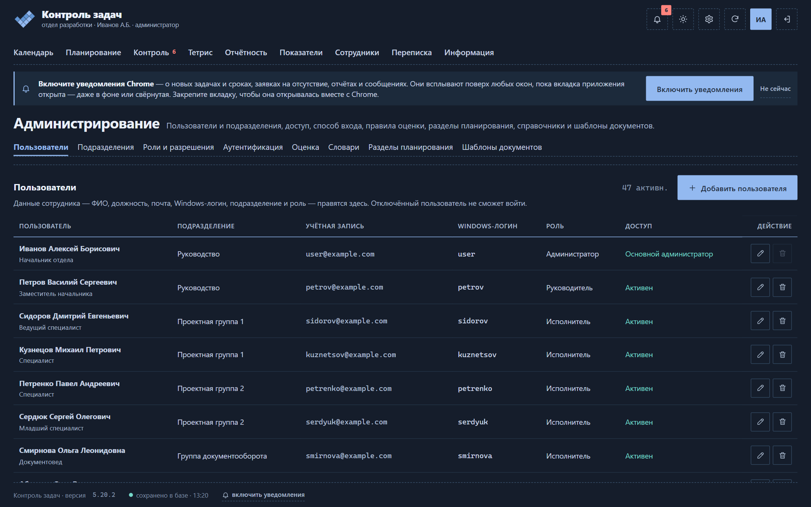
Иерархия «организация → управление → отдел → отделение» деревом со сворачиванием. «+» добавляет вложенное подразделение следующего уровня, изменение и удаление — через форму. Родитель — строго уровнем выше; удалить можно только пустое подразделение без вложенных. Отделения основного отдела — это группы в фильтрах «Планирования», «Тетриса» и выборе исполнителей.
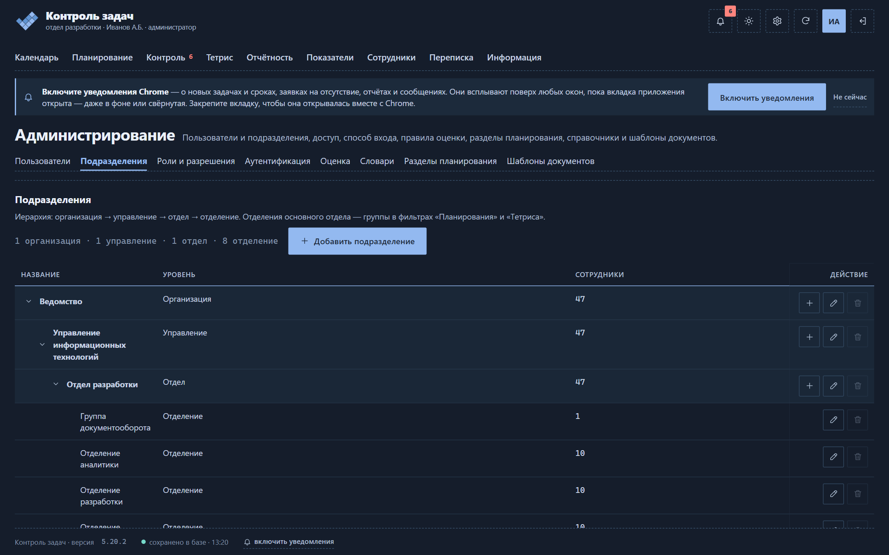
Слева — роли (администратор, руководитель, исполнитель) с числом разрешений, справа — разрешения выбранной роли по группам: администрирование, работа отдела, задачи, отсутствия, система. Флажок включает разрешение для всех пользователей с этой ролью. У каждой вкладки администрирования своё разрешение — пользователи, подразделения, роли, аутентификация, оценка, словари, разделы планирования и шаблоны документов открываются по отдельности. Исключение — «Редактирование UI»: оформление личное и доступно всем.
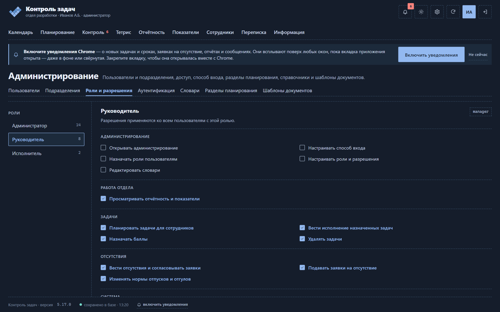
| Способ | Как работает |
|---|---|
| Форма входа | Рабочая почта и пароль приложения. Используется по умолчанию. |
| Windows | Бесшовный вход: сервер за IIS или доверенным прокси получает подтверждённый доменный логин и сопоставляет его со столбцом «Windows-логин». Формы и пароля нет. Доступен, только если сервер настроен (глава 15). |
| Резервный вход | При входе через Windows администратор может войти по форме — на случай недоступности домена. Рекомендуется оставить включённым. |
Переключатель режима доступен всегда. Блок «Проверка Windows-входа» и кнопка «Проверить настройку» показывают, что сервер видит в этом самом запросе: включено ли доверие прокси, совпал ли общий секрет, какие заголовки пришли, какой доменный логин из них взят и с каким сотрудником он сопоставлен. Если что-то не так, выводится конкретная причина — например, что не задана переменная WINDOWS_AUTH_TRUST_PROXY или что прокси не передал пользователя. Проверку удобно запускать до переключения режима.
Нельзя запереть себя снаружи. Если режим Windows включён, а прокси настроен неверно, приложение не блокирует вход: пока сервер не видит доменного пользователя в самом запросе, форма с почтой и паролем продолжает работать и показывает подсказку о том, что бесшовный вход пока не отвечает. Порядок настройки IIS — в главе 15 и в docs/corporate-offline.md.
Правила подсчёта баллов для «Показателей» и карточки сотрудника.
Правила применяются при показе и пересчитывают в том числе прошлые периоды. Вес самой записи отчёта остаётся тем, что был на момент отправки, — правила меняют только то, как баллы складываются. Нужно разрешение «Настраивать правила подсчёта баллов».
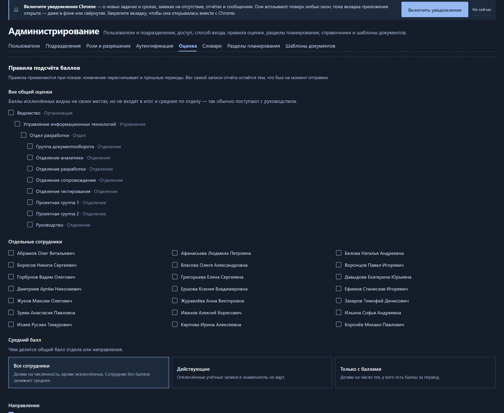
Вкладка доступна всем сотрудникам независимо от роли: оформление личное. Настройки хранятся в браузере сотрудника, других не касаются и на сервер не уходят. Сохраняются только отличия от оформления по умолчанию, поэтому незаданные значения продолжают приходить из дизайн-системы. Сотрудник без прав администратора видит в разделе только эту вкладку.
#RRGGBB. «По умолчанию» возвращает исходный цвет, «Вернуть всё по умолчанию» — всё оформление сразу.Цвета отдельных значений справочников («Словари») остаются главнее: здесь задаётся цвет по умолчанию для тех видов и категорий, у которых свой не указан.
Категории задач, виды отсутствий и статусы задач. Добавленная категория задач сразу появляется в фильтрах «Календаря» и «Контроля» и в окне задачи; цвет из справочника применяется там же, а без цвета категория показывается цветом «Иного». Значения — таблицей; «Добавить значение», «Изменить» и «Удалить» открывают форму. Название показывается в интерфейсе, код связывает значение с данными. У категорий задач и видов отсутствий есть цвет — палитра из 12 приглушённых цветов или код #RRGGBB. Цвет категории — рамки событий Календаря и точки в «Планировании», цвет вида отсутствия — полосы «Тетриса» и точки у фамилий. В тёмной теме цвета автоматически высветляются.
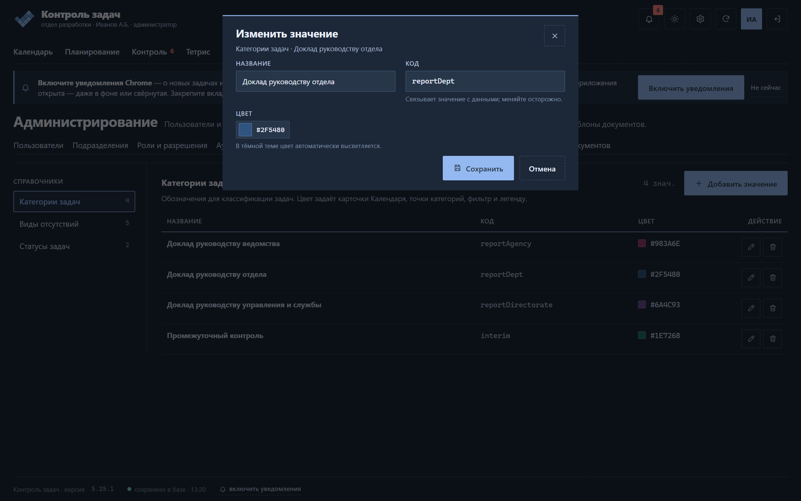
План — дерево: разделы содержат вложенные разделы и рабочие позиции. Позиции используются в «Планировании» и задают базовый вес в баллах.
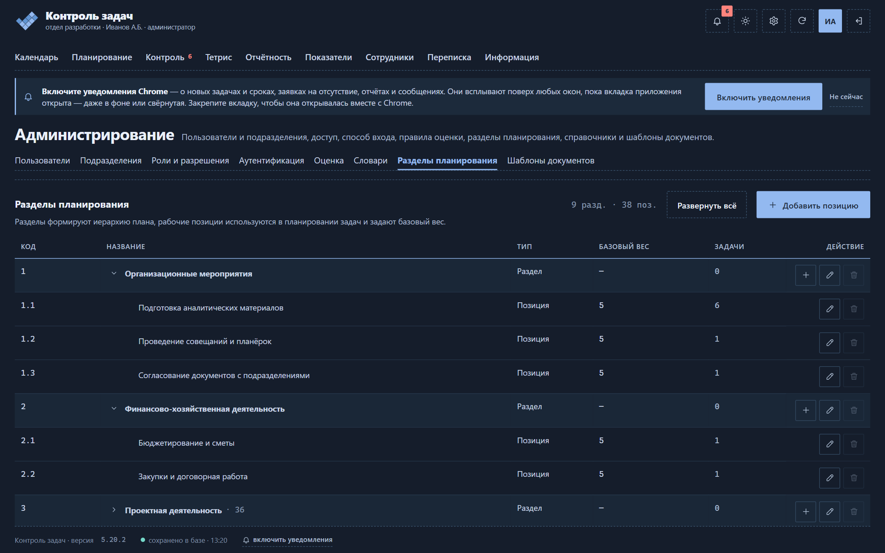
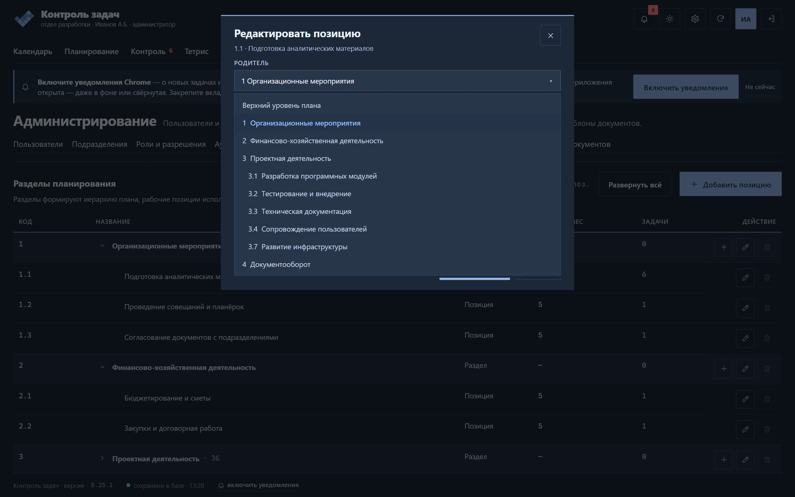
Правила иерархии. Родителем может быть только существующий раздел. Позицию нельзя вложить в неё саму или в её потомка; раздел с вложенными нельзя превратить в рабочую позицию; позицию с задачами нельзя сделать разделом. Эти правила проверяет и сервер.
Шаблоны для кнопки «Документ». У шаблона — название, раздел («Планирование» или «Отчётность») и текст с подстановками. Кнопка в каждом разделе предлагает только свои шаблоны. По умолчанию: «План мероприятий на неделю» — для «Планирования», «Справка об исполнении» — для «Отчётности».
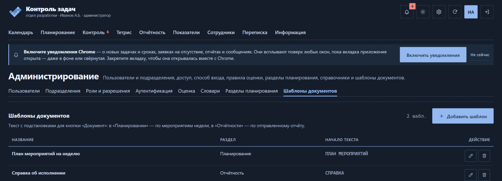
В редакторе слева — текст, справа — предпросмотр: для «Планирования» — на мероприятиях текущей недели, для «Отчётности» — на последнем отправленном отчёте. Список подстановок раскрывается под текстом и меняется вместе с разделом. Шаблон с незакрытым блоком не сохраняется, ошибка видна сразу.
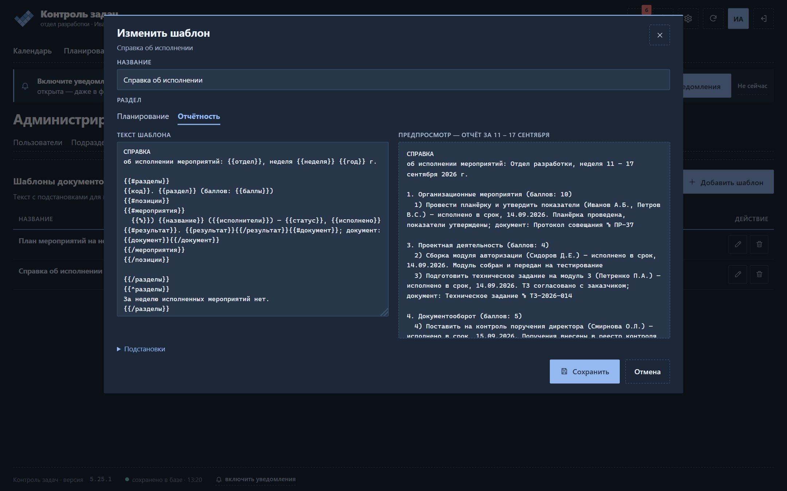
| Подстановка | Что означает |
|---|---|
{{отдел}}, {{неделя}}, {{год}}, {{с}}, {{по}} | Отдел и неделя документа. |
{{дата}}, {{составил}}, {{всего}} | Дата формирования, кто сформировал, число мероприятий. |
{{#разделы}}…{{/разделы}} | Повторить текст для каждого раздела; внутри — {{код}}, {{раздел}} и блок {{#позиции}}. |
{{#мероприятия}}…{{/мероприятия}} | {{№}}, {{название}}, {{срок}}, {{исполнители}}, {{статус}}, {{документ}}, {{результат}}; в «Планировании» ещё {{категория}}, в «Отчётности» — {{исполнено}} и {{баллы}}. |
{{#сотрудники}}…{{/сотрудники}} | Только «Отчётность»: итоги по исполнителям — {{сотрудник}}, {{фио}}, {{мероприятий}}, {{баллы}}. Там же {{получен}} и общий {{баллы}}. |
{{^разделы}}…{{/разделы}} | Текст, если список пуст. |
Сравнение с предыдущей документированной версией 4.0.2 от 19.09.2026 (выпуски 4.0.3–{{VERSION}}).
| Было в 4.0.2 | Стало в {{VERSION}} |
|---|---|
| Сотрудники и группы заданы в коде | Подразделения — иерархия «организация → управление → отдел → отделение» в «Администрировании»; у пользователя — подразделение. Сотрудники приложения берутся из пользователей базы; в демоданных 40 сотрудников отдела разработки в четырёх отделениях. |
| Словари — только код и название, правка в строке таблицы | Словари редактируются через форму; у категорий задач и видов отсутствий — цвет (палитра или #RRGGBB), он применяется в Календаре, «Планировании» и «Тетрисе». |
| «Планирование» — матрица под страницей, без выгрузки | Матрица на высоту окна с закреплёнными шапкой и колонкой, тонкие линии между столбцами, легенда под матрицей, точка отсутствия у фамилии. Кнопки «Выгрузить CSV» и «Документ» — текст по шаблону. |
| «Отчётность» прокручивалась вместе со страницей | Таблица на высоту окна: закреплены шапка, колонка разделов и итог баллов. Кнопка «Документ» — справка по исполненным мероприятиям отчёта. |
| — | Шаблоны документов в «Администрировании»: раздел шаблона, редактор с предпросмотром и подстановками. |
| «Контроль» — пять колонок | Шесть колонок по три в ряд: добавлена «В течение квартала». |
| Новые сообщения в «Переписке» не отмечались | Счётчик непрочитанных у пункта меню и на вкладке браузера, разделитель «Новые сообщения», обновление каждые 15 секунд. |
| События Календаря — заливка цветом категории | Стиль «Контур с точкой»: рамка и точка в цвет категории; фильтр категорий компактный, в строке заголовка. Линии сетки таблиц менее заметны. |
| Окно задачи: однострочное название, «Позиция плана» | Название — многострочное поле на всю высоту колонки; поле называется «Раздел планирования», вкладка администрирования — «Разделы планирования». |
| Скриншоты «Информации» — только тёмные | Скриншоты переключаются вместе с темой; PDF собирается со светлыми. |
Подробный список выпусков — в файле CHANGELOG.md.
| Было в 3.7.0 | Стало в 4.0 |
|---|---|
| Две роли, права заданы в коде | Раздел «Администрирование»: пользователи, три роли (администратор, руководитель, исполнитель) с настраиваемыми разрешениями, словари. |
| Вход только по форме | Способ входа: форма или бесшовный вход через Windows (IIS, Kerberos/NTLM), резервный вход администратора; работа в корпоративной сети без интернета. |
| Позиции плана заданы в коде, код вводился вручную | Иерархия позиций плана: дерево со сворачиванием разделов, выбор родителя, код собирается сам; при переносе раздела вложенные позиции и задачи переезжают вместе с ним. |
| Заголовок страницы и фильтры — в несколько строк | Компактные заголовки: название и пояснение в одну строку, строка фильтров — подпись и значение в одну строку, высота 48 px. |
| Было в 3.5.0 | Стало в 3.7.0 |
|---|---|
| Системный календарь браузера для дат, серые системные подсказки, системные полосы прокрутки | Своя библиотека компонентов в стиле «Тёплый мел»: календарь даты и времени (ввод с клавиатуры, неделя с понедельника, время с шагом 15 минут), подсказки при наведении и фокусе, поля, кнопки, списки, флажки, окно; полосы прокрутки в цветах темы. Витрина — /kit. |
| Логотип — два наложенных квадрата | Новый логотип: галочка из квадратных блоков; в шапке, на вкладке браузера и в документации. Цвета меняются вместе с темой. |
| Документация — только PDF-файл | Раздел «Информация» — последний в меню: руководство внутри приложения с оглавлением и подсветкой текущей главы, в цветах темы, с кнопкой «Скачать PDF». |
| Демоотдел из 7 человек | 40 тестовых сотрудников в четырёх новых группах с отпусками, командировками, больничными, отгулами и учёбой — для проверки «Тетриса» и других разделов на большом отделе. |
| Сводка «Сегодня отсутствуют» перечисляла всех | Показаны первые трое и «ещё N», полный список — в подсказке. |
| Было в 3.4.0 | Стало в 3.5.0 |
|---|---|
| Над графиком «Тетриса» — крупный заголовок с длинным пояснением, строка фильтров из трёх карточек, четыре крупные цифры сводки и заголовок «График на …»; график начинался примерно на 450 px от верха страницы | Компактная шапка: заголовок, месяц, группа и кнопка «Отсутствие» — в одной строке; сводка — узкой полосой в одну строку; виды отсутствий и легенда — вместе в следующей строке. График начинается на 232 px, на экране 1440×900 все семь сотрудников видны без прокрутки. |
| Показатель «Отпуск в этом месяце» — сумма дней отпуска всех сотрудников (например, 12): не видно, сколько людей отсутствует одновременно | «Пик отпусков» — наибольшая доля сотрудников, одновременно находящихся в отпуске в этом месяце, с числом людей и датами: «14% · 1 из 7 · 14–25.09». Считается по отделу или по выбранной группе. |
| Одновременные отпуска не контролировались | Порог 30%: при превышении — красная цифра, предупреждение над графиком с датами и красные метки дней в шапке графика. Если порог превысят заявки — янтарное предупреждение. У заявки, согласование которой приведёт к превышению, — пометка «в отпуске будет N% отдела». |
| — | На телефоне сводка — сетка 2×2 без пояснений. |
| Было в 3.3.2 | Стало в 3.4.0 |
|---|---|
Раздел «Отсутствия», адрес /absences | Раздел называется «Тетрис», как его называют в отделе: в меню, в заголовке страницы и в этом руководстве. Адрес — /tetris; старые ссылки и закладки на /absences открывают «Тетрис». |
Остальное не изменилось: блок «Отсутствия» в карточке сотрудника, виды отсутствий, кнопки «Отсутствие» и «Заявка на отсутствие» называются по-прежнему, данные в базе те же.
| Было в 3.3.1 | Стало в 3.3.2 |
|---|---|
| Обращение к пользователю со строчной буквы: «это вы», «(вы)», «ваши задачи» | Вежливая форма с прописной: «это Вы» в карточке сотрудника, «(Вы)» у своих сообщений в «Переписке», «Ваши задачи на время отсутствия» в «Отсутствиях». |
| Было в 3.3.0 | Стало в 3.3.1 |
|---|---|
| Категория «Без категории» | Категория называется «Иное» — в окне задачи, в фильтре категорий Календаря и в подсказках. Цвет прежний. |
| У задачи вне плана вместо поля баллов — текст «Баллы начисляются только за задачи с позицией плана» | Поле «Баллы за исполнение» остаётся на месте, но пустое и неактивное, рядом пояснение: «Базовый вес позиции указывается только за задачи из основных категорий». Окно не меняет раскладку при выборе позиции плана. |
| Было в 3.2.1 | Стало в 3.3.0 |
|---|---|
| Шапка с разделами уезжала вверх вместе со страницей | Шапка закреплена на всех экранах: при прокрутке разделы, счётчик просрочки и кнопки остаются наверху. |
| Панель структуры в «Сотрудниках» прокручивалась вместе с карточкой | Панель закреплена под шапкой и прокручивается внутри себя, если сотрудников много. Отступ от шапки подстраивается под её высоту (одна или две строки). |
| На телефоне разделы занимали три строки шапки | Шапка на телефоне компактная — 119 px вместо 263: знак логотипа и кнопки в одной строке, разделы — одной строкой с прокруткой вбок; текущий раздел автоматически попадает в поле зрения. |
Шапка и панель и раньше были задуманы закреплёнными, но настройка страницы против горизонтальной прокрутки мешала им держаться. Теперь она сделана иначе, и страница по-прежнему не прокручивается вбок.
| Было в 3.2.0 | Стало в 3.2.1 |
|---|---|
| В графике «Отсутствий» дни имели постоянную ширину 32 px; на широком мониторе справа от графика оставалось пустое место | График занимает всю ширину: дни растягиваются равномерно, на мониторе 1920 px день шириной около 55 px, подписи полос читаются лучше. На узких экранах день не уже 32 px (на телефоне — 30 px), график прокручивается вбок, как раньше. |
| Было в 3.1.0 | Стало в 3.2.0 |
|---|---|
| Матрица «Планирования» показывала столбцы всего отдела или одного сотрудника; при 20 и более сотрудниках её приходилось прокручивать вбок | Фильтр «Группа» в строке фильтров «Планирования» (у руководителя): в матрице остаются столбцы только выбранной группы. |
| В фильтре «Сотрудник» всегда был весь отдел | При выбранной группе в фильтре «Сотрудник» только её сотрудники, первый пункт — «Вся группа». Сотрудник из другой группы сбрасывается при смене группы. |
Фильтр «Группа» в «Отсутствиях» и в «Планировании» теперь один и тот же элемент, поэтому группы в обоих разделах совпадают. Исполнитель по-прежнему видит в «Планировании» только свой столбец.
| Было в 3.0.1 | Стало в 3.1.0 |
|---|---|
| Исполнители в окне задачи — флажки всех сотрудников подряд; при 20–30 сотрудниках окно становилось очень длинным | Новый выбор исполнителей. Выбранные сотрудники видны сверху, у каждого есть крестик «Убрать». Весь отдел — в прокручиваемом списке высотой до 232 px, разбитом по группам. |
| Искать сотрудника приходилось глазами | Поиск по фамилии, имени или должности; «е» и «ё» не различаются. Поиск появляется, если сотрудников больше восьми. Первое нажатие Escape очищает поиск, окно остаётся открытым. |
| Группу назначали по одному человеку | «Выбрать группу» / «снять группу» — одним нажатием для каждой группы отдела. Рядом со списком — счётчик «выбрано N из M». |
| Отсутствие исполнителя было видно только в предупреждении над полем | Пометка об отсутствии в день срока («отпуск», «больничный», «заявка») стоит прямо у фамилии, в том числе у тех, кого ещё не выбрали. |
Исполнитель по-прежнему видит список исполнителей задачи только для чтения, без флажков.
| Было в 3.0.0 | Стало в 3.0.1 |
|---|---|
| Приложение занимало колонку шириной до 1320 px по центру экрана, по бокам — отступы 40 px и пустые поля | Приложение занимает всю ширину окна. Боковые отступы уменьшены: 24 px на компьютере, 20 px на планшете, 14 px на телефоне. |
| На экранах около 1600 px меню в шапке обрезалось: «Календарь» и «Переписка» уходили за край | Все разделы меню видны целиком. Шапка в одну строку — от 1400 px; при нехватке места сокращается подпись под логотипом, а не меню. На более узких экранах меню стоит второй строкой. |
Сравнение с версией 2.0.1.
| Было в 2.0.1 | Стало в 3.0.0 |
|---|---|
| Данные хранились в браузере одного компьютера | База данных PostgreSQL на сервере: все сотрудники работают с одними данными; права проверяет сервер; состояние связи — в подвале. |
| Учёта отсутствий не было | Раздел «Отсутствия»: график на месяц, пять видов отсутствий, заявки и согласование, нормы и остатки отпуска и отгулов по каждому сотруднику, блок в карточке сотрудника. |
| Пересечения сроков с отсутствиями не отслеживались | Индикация пересечений: красные ромбы и рамки в графике, список пересечений с отметкой срочности, пометки в «Планировании», «Контроле» и «Календаре», предупреждение в окне задачи и в окне отсутствия. |
| Колонка «Баллы» в матрице «Планирования» | Колонка убрана — матрица шире. Баллы руководитель видит в окне задачи. |
| Исполнитель видел поле баллов в окне задачи | Исполнитель не видит баллы в окнах «Планирования» и «Календаря»; свою статистику с баллами он смотрит в «Моей карточке». |
| — | Уточнено: баллы начисляются сотруднику, когда исполненная задача попадает в отчёт по кнопке «Направить в отчёт». |
| Разделы в одну строку с логотипом от 1180 px | С восемью разделами шапка переходит в одну строку только от 1600 px, чтобы меню не обрезалось. |
Данные версий 1 и 2, сохранённые в браузере, читаются в автономном режиме с автоматическим переносом. На сервере база заполняется демоданными при первом входе.
Сравнение с версией 1.0.0 от 17.09.2026.
| Было в 1.0.0 | Стало в 2.0 |
|---|---|
| Все пользователи с одинаковыми правами | Роли руководителя и исполнителя с разным интерфейсом: исполнитель ведёт исполнение своих задач, не видит отчётность и показатели, не удаляет задачи и не отправляет отчёты. Права проверяются и при сохранении. |
| Одна ячейка матрицы — кнопка только в пустом месте | Несколько мероприятий в ячейке: под добавленными задачами всегда видна кнопка «+ задача». |
| Вес позиции менялся полем в колонке «Баллы» для всей строки | Баллы за исполнение в карточке задачи: поле под отметкой об исполнении, кнопка сброса к базовому весу. Колонка «Баллы» показывает только базовый вес. |
| В календаре не было поиска | Поиск по содержанию со списком найденного и переходом к задаче. |
| Цвет события показывал только состояние | Категории мероприятий с цветами и фильтром; состояние — знаками ✓ и «!». |
| Только светлая тема | Тёмная тема по умолчанию и переключатель тем. |
| Версия нигде не указывалась | Версионность: номер в интерфейсе и документации, файл CHANGELOG.md. |
| Учётные записи только руководителей | Добавлены исполнители sidorov@example.com и smirnova@example.com; в демоданных — доклады и промежуточный контроль. |
Исправлено в 2.0.0:
Данные, сохранённые версией 1.0.0, переносятся автоматически: изменённый вес строки становится баллами её задач, роль пользователя берётся из карточки сотрудника. Повторно входить не требуется.
Перенос приложения с Next.js на Vite: рабочий вход и защита разделов, сохранение данных, единая задача для всех разделов, отчёты по неделям, печать и CSV, адаптивная вёрстка в дизайн-системе «Тёплый мел».
Иллюстрация на обложке создана в Higgsfield. Скриншоты сняты автоматически скриптом docs/shoot.mjs.